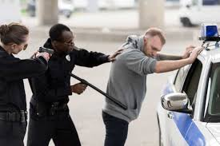
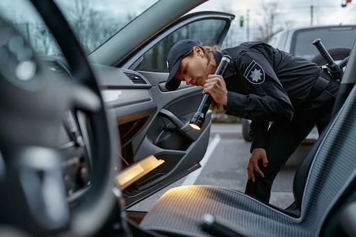

Key Search and Seizure Concepts
The Fourth Amendment
The Fourth Amendment protects against unreasonable searches and seizures. It requires warrants based on probable cause and describes what constitutes a search – a cornerstone of personal dignity and autonomy.
It reads: "The right of the people to be secure in their persons, houses, papers, and effects, against unreasonable searches and seizures, shall not be violated, and no Warrants shall issue, but upon probable cause."
Search Warrants
A search warrant is a court order authorizing law enforcement to search a specific location for specific items. It must be supported by probable cause and describe the place and items to be searched.
The warrant must be issued by a neutral magistrate, specify the time of execution, and list the places to be searched and items to be seized. Overbreadth can invalidate a warrant.
The Exclusionary Rule
The exclusionary rule prohibits the use of illegally obtained evidence in court. It deters police misconduct and protects constitutional rights by ensuring that violations have consequences.
This rule applies to both physical evidence and testimonial evidence obtained through unconstitutional means. It creates a "fruit of the poisonous tree" doctrine extending to derivative evidence.
Plain View Doctrine
The plain view doctrine allows seizure of evidence that is in plain view during a lawful search or observation, without a separate warrant. It requires lawful access to the area where the evidence is observed.
Three requirements: (1) Lawful presence at the location, (2) Immediate visibility of the evidence, and (3) Probable cause to believe the item is evidence or contraband.
Stop and Frisk
Stop and frisk allows police to briefly detain and pat down suspects based on reasonable suspicion of a crime, as established in Terry v. Ohio. This balances officer safety with individual rights.
The frisk is limited to a pat-down for weapons. Officers cannot search for evidence of crimes unless additional justification exists. The stop must be temporary and investigative in nature.
Exceptions to the Warrant Requirement
Exceptions include consent, exigent circumstances, plain view, automobile exception, and searches incident to arrest. These exceptions balance privacy rights with practical law enforcement needs.
Each exception has specific requirements that must be met for the search to be lawful. Understanding these exceptions is crucial for both law enforcement and citizens.
Controversial Issues in Search and Seizure
Technology and Privacy
The use of technology like cell phone tracking, body cameras, and surveillance drones raises new privacy concerns. Courts struggle to apply constitutional protections to digital evidence.
Key questions: Does law enforcement need a warrant to access cell phone location data? Can police use StingRay devices to track phones? These issues remain at the forefront of Fourth Amendment jurisprudence.
Racial Profiling in Traffic Stops
Cases involving racial profiling in traffic stops highlight ongoing tensions between law enforcement and minority communities. Studies show minorities are more likely to be stopped and searched.
The Supreme Court has upheld traffic stops based on traffic violations but requires officers to have genuine probable cause or reasonable suspicion for any search.
Good Faith Exception
The "good faith" exception allows evidence from faulty warrants to be admitted if officers relied on the warrant in good faith. This balances justice with practicality.
However, if the warrant is "stale" (old information), lacks probable cause, or is overly broad, the exception may not apply. Courts carefully examine the warrant's validity.
Digital Searches
Does law enforcement need a warrant to access cloud data, emails, or social media accounts? These questions challenge us to adapt constitutional protections to modern technology.
Recent cases suggest that digital data receives strong Fourth Amendment protection, but the law continues to evolve as technology advances.
Landmark Court Cases
Established the exclusionary rule for state courts, meaning evidence obtained through illegal searches cannot be used in criminal trials at all levels of government.
Key Holding: All evidence obtained by searches and seizures in violation of the Constitution is inadmissible in state court, ensuring that police follow constitutional procedures.
Redefined searches under the Fourth Amendment as violations of reasonable expectation of privacy, not just physical trespass. A landmark shift in privacy law.
Key Holding: A search occurs when government action invades a person's reasonable expectation of privacy. The Fourth Amendment protects people, not just places.
Established the "automobile exception" allowing police to search an entire vehicle, including all containers, if they have probable cause to believe the car contains evidence or contraband.
Key Holding: Once probable cause exists to search a vehicle, officers may search every part of the vehicle and its contents, including closed containers, without a warrant.
Narrowed the search incident to arrest exception, requiring that officers believe the arrestee is within reaching distance of the vehicle or that evidence is in the vehicle.
Key Holding: Police may search a vehicle incident to arrest only if the arrestee is within the vehicle or if officers reasonably believe evidence of the offense of arrest is in the vehicle.
Visual Ideas
Searches: Warrant vs. Warrantless
| Aspect | With Warrant | Without Warrant |
|---|---|---|
| Requirement | Probable cause, judge approval | Exceptions apply |
| Scope | Specific place and items | Limited by exception |
| Evidence | Generally admissible | May be excluded |
Reasonable Expectation of Privacy
A search occurs when government action invades a person's reasonable expectation of privacy.
Two-Part Test:
- Subjective Expectation: The person actually expected privacy
- Societal Recognition: Society recognizes that expectation as reasonable
The Exclusionary Rule
How it Protects Defendants:
- Prevents tainted evidence from being used
- Deters illegal police conduct
- Ensures judicial integrity
- Creates "fruit of the poisonous tree" doctrine
Educational Video: Crash Course on Search and Seizure
An educational video explaining the basics of search and seizure laws.
Search and Seizure Images Gallery

